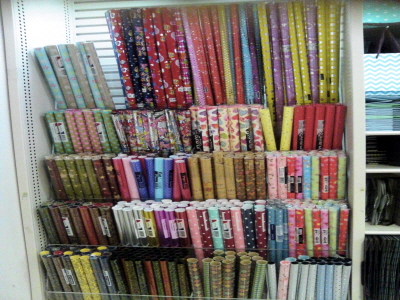

1. 종이

종이상자를 꾸밀 때 가장 기본적이면서 중요한 재료는 종이예요. 2. 패브릭
단순히 종이를 붙이는 것만으로도 상자는 깔끔하고 새롭게 변할 거에요.
종이의 종류도 여러가지이고 각각의 장점이 있지만, 저는 선물 포장할 때 쓰는 포장지를 선호합니다.
그 이유는 포장지 자체로 예쁜 모양이 많고 굳이 직접 디자인할 필요가 없어서 편리하거든요..^^
이미지 출처: 텐바이텐 홈페이지
종이 대신에 패브릭을 사용할 수도 있어요.
보자기처럼 패브릭을 활용해서 포장하거나, 조각천이 있다면 버리지 않고 장식으로 쓸 수 있어요.
최주희. (2010). 바람마녀의 선물포장 토크. 서울: (주)비앤씨월드
3. 접착제, 테이프
무언가를 붙일 때 필요한 도구죠.
목공용 접착제를 주로 많이 쓰지만 순간 접착제를 쓰면 기다릴 필요가 없이 바로 마르기 때문에 편리해요!
또 테이프 중에서는 양면테이프가 정말 편리합니다.
양면으로 붙일 수 있어서 일반 테이프를 접어서 붙일 필요가 없으니까요.
주의! 순간접착제를 사용하는 경우 손에 접착제가 묻지 않도록 조심해야 해요.
안 그러면 손이 물건에 같이 붙어버리거나 손에서 접착제가 잘 떨어지지 않거든요.
주의! 양면테이프가 편리하다고 너무 많이 사용하지는 마세요. 4. 스티커
양면테이프로 붙이다보면 제대로 붙여지지 않은 부분이 구겨져서 별로 예쁘지 않은 모양이 될 수도 있어요..!
글씨체가 적힌 스티커, 귀여운 모양의 스티커 등은 상자를 꾸밀 때에도, 유리병을 꾸밀 때에도 아주 좋은 재료이죠. 5. 레터링지
많은 분들이 그 외에도 다이어리를 꾸밀 때, 편지를 쓸 때 등 스티커를 많이 사용해봤을 거에요.
집에 굴러 다니는 스티커들을 모아서 리폼할 때 사용하는 것도 하나의 방법이겠네요~
이미지 출처: 문자동맹 홈페이지
레터링지는 생소할 수도 있지만, 이것 또한 좋은 재료입니다!
원하는 위치에 레터링지를 놓고 스타일러스라는 도구나 샤프펜슬과 같은 뾰족한 도구로 살살 문지르면 글자가 새겨집니다.
글씨체도 다양하게 있어서 골라 쓰는 재미가 있어요~